News
2024
[Award] Our team has won the Excellent Innovation Award, 2nd Place, in the IEEE International Challenge in Design Methods for Power Electronics. Cheers! Details of the challenge can be found here. In the challenge, we use AI to improve the accuracy of the power loss model for magnetic components. We are in the procedure to publish our results. Stay tuned!
[Service] Dr. Qin is invited to serve as a guest AE for the JESTPE special issue on Design and Validation Methodologies for Power Electronics Components and Systems
[Grant] The EU Horizon project ECS4DRES is granted. I will hire a PhD or PostDoc to study grid-forming energy storage systems. Send me your CV and a motivation letter if you are interested in the position
[Service] Dr. Qin is invited to serve as a guest AE for the JESTPE special issue on Power Electronics Role in Future Renewables and Power-to-X Systems. You are welcome to submit your work. Check out the CFP
[Promotion] Dr. Qin is promoted to an associate professor at TU Delft, starting from 1st Feb, 2024
2023
[Project] Dr. Qin attended the final review of the H2020 project Progressus in Bari, Italy. In the project, we delivered two PhD students, models for power quality in EV charging, and 50 kW wireless power transfer technology. Together with more than 20 parters from EU, we satisfied the reviewers. More details of our research outcomes can be found here
[Publication] My phd student Lu's paper A Gradient-Descent Optimization Assisted Gray-Box Impedance Modeling of EV chargers has been published on IEEE Trans Power Electronics. Congratulations!
[Publication] My phd student Junjie's paper A Resilience Enhanced Secondary Control for AC Micro-grids has been published on IEEE Trans Smart Grid. Congratulations!
[Patent] Our two patents are granted. One is on a power router, and the other is on a resonant converter that can be used to efficiently convert low voltage to medium voltage. Feel free to contact me if you are interested.
[Project] Our project on the power quality of heavy-duty truck charging hubs has started. The project is sponsored by Shell
[Webinar] Dr. Qin has given a webinar in Benelux IEEE PELS/IAS/PELS Joint Chapter Technical Webinar Series. POWER QUALITY IN ELECTRIC VEHICLE CHARGING NETWORKS
[Tutorial] Dr. Qin has given a tutorial on EV Charging Technologies in EPE 2023, Aalborg, Denmark
[Service] Dr. Qin is invited to serve as a technical program chair in IEEE-PEDG 2024, Luxemburg
[Tutorial] Dr. Qin has given a tutorial on EV Charging Technologies in ICPE 2023, Jeju, South Korea, together with colleagues from TU Delft
2022
[Service] Dr. Qin is invited to be a technical program chair of PEDG 2023, Shanghai, China
[Invited talk] Dr. Qin has given an invited talk on DERLab Knowledge Day, on 'Review on Power Quality Issues in EV Charging'.
[Invited talk] Dr. Qin has given an invited talk in PEMC, Brasov, and the topic is 'Review on Power Quality Issues in EV Charging'.
[Tutorial] Dr. Qin has given a tutorial on EV Charging Technologies in PEDG 2022 together with colleagues from TU Delft.
[Publications] Two papers got accepted by IEEE Open Journal of the Industrial Electronics Society, including Lucia's paper 'Guidelines for Stability Analysis of the DDSRF-PLL Using LTI and LTP Modelling in the Presence of Imbalance' and Adnan's paper 'An Overview on Medium Voltage Grid Integration of Ultra-fast Charging Stations: Current Status and Future Trends'. Congratulations!
[Project] Our project FlexH2 has been kicked off. Looking forward to a fruitful collaboration with the partners Shell, GE, ABB, DNV, VONK, TKF, Van Oord and TU/e
[Honour] Our paper 'Grid Impact of Electric Vehicle Fast Charging Stations: Trends, Standards, Issues and Mitigation Measures - An Overview' is in the TOP 5 mostly cited papers in IEEE Open Journal of Power Electronics. Congratulations to all the authors!
[Service] Dr. Qin is serving as a Tutorial Chair in IEEE-PEDG 2022
[Service] Dr. Qin is serving as a committee member of IEEE Standard Association on the topic of 'Solid-state transformers'
[Invited Talk] Dr. Qin is invited to give a talk in IEEE-PEMC 2022, on 'The power quality of EV charging'
[Promotion] Dr. Qin is promoted to be a tenured assistant professor at TU Delft
2021
[Grant] Our Mooi project Flex-H2 has been granted. As a principle investigator I have been granted 750 K Euros for two PhD students. Will focus on solid state transformers for offshore wind powered hydrogen electrolyzer. excited to start the project in April, 2022.
[Editorial] Dr. Qin is appointed as an guest AE of IEEE Transactions on Energy Conversion special issue on Modeling and Control of Converter-Based Resources in Modern Power Systems
[Promotion] Dr. Qin is promoted to be university docent 1 (UD1) at TU Delft
[Patent] Our patent "Bi-directional Isolated Multi-port Converter with Hot-Swap Capability" is filed
[Patent] Our patent "Balancing converter for a bipolar dc grid using a series resonant converter" is filed
[Article] Our former student Dr. Pavel Purgat has got his paper "Low-Voltage dc System Building Blocks: Integrated Power Flow Control and Short Circuit Protection" accepted by IEEE Industrial Electronics Magazine. Congratulations!
[Editorial] Dr. Qin is appointed as an guest AE of IEEE JESTPE special issue on Smart Solid State Transformers for AC/DC Hybrid Power Grids
[Article] Our student Lucia has got her paper "Impedance Modelling for Three-Phase Inverters with Double Synchronous Reference Frame Current Controller in the Presence of Imbalance" accepted by IEEE Trans Power Electron. Congratulations!
[Invited Talk] Dr. Qin successfully gave a speech in ElaadNL EV charging best practices and Power Quality Webinar.
[Invited Talk] Dr. Qin is invited to give a speech in ElaadNL EV charging best practices and Power Quality Webinar
[Editorial] Dr. Qin is appointed as an associate editor of IEEE Transactions on Industrial Electronics
[Article] Our student Lu's paper 'Grid Impact of Electric Vehicle Fast Charging Stations: Trends, Standards, Issues and Mitigation Measures - An Overview' has been the most popular one in the IEEE Open Journal of Power Electronics since it was published in Feb 2021. Congratulations!
[Award] Dr. Qin is one of the 'Distinguished Reviewers' of TIE in year 2020

 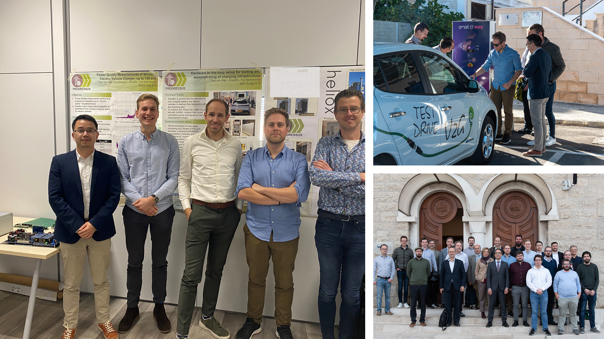
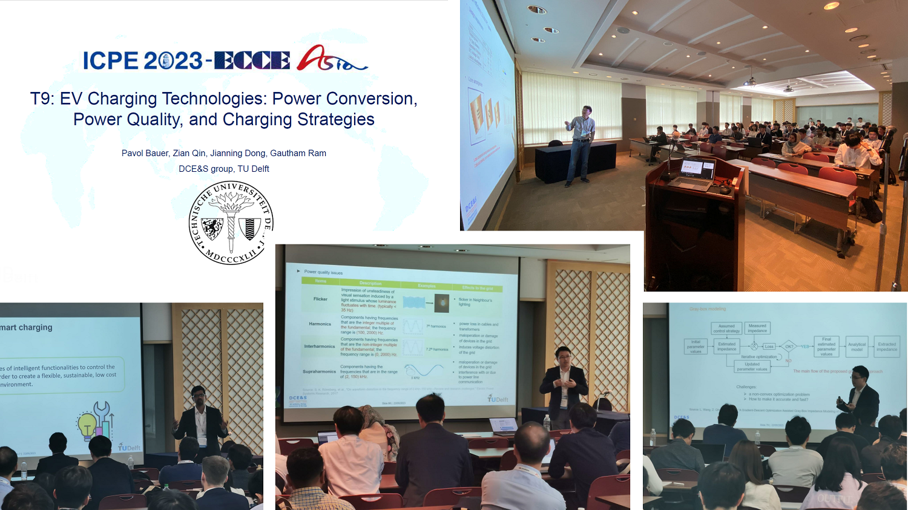
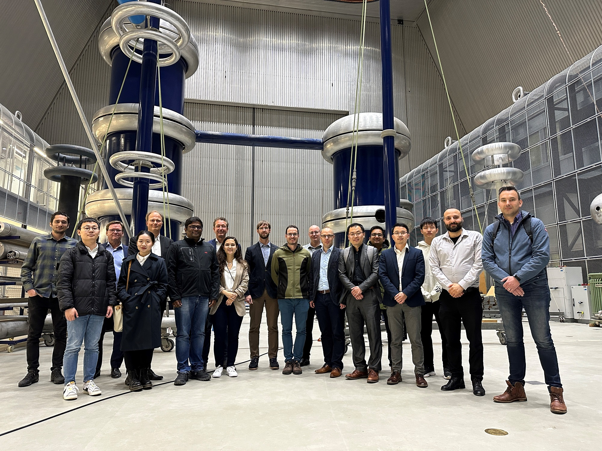
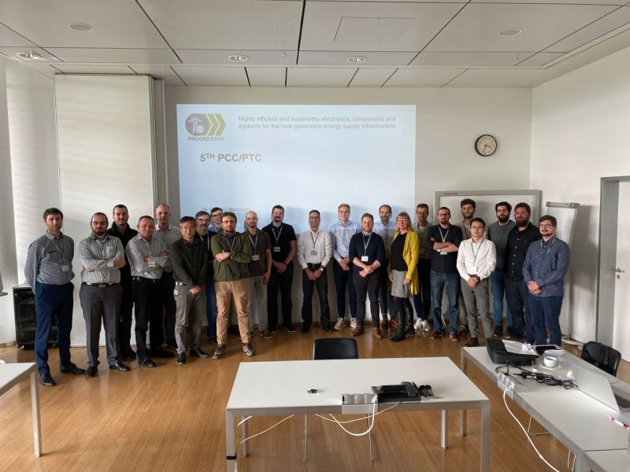
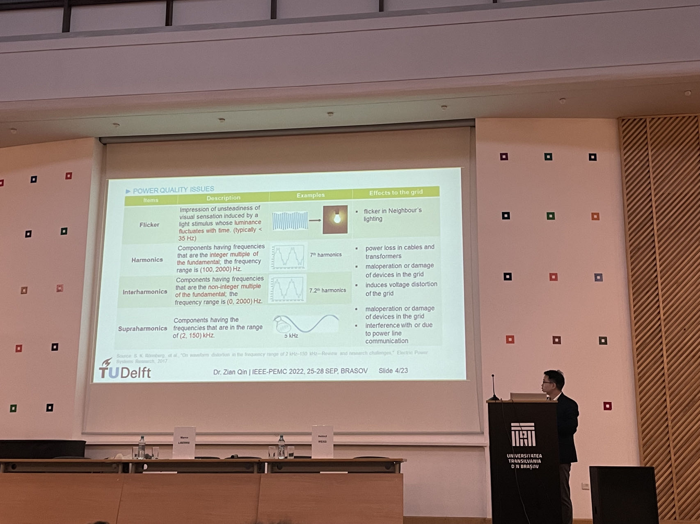
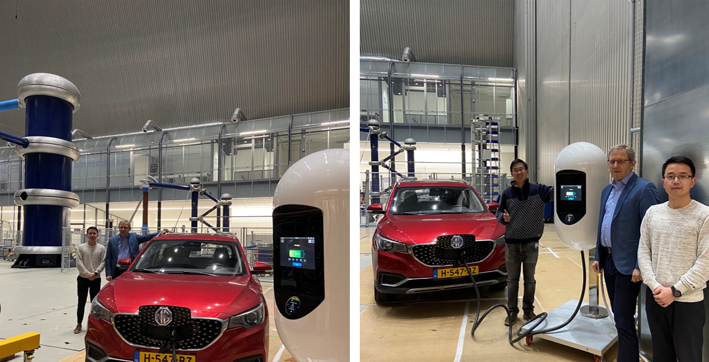
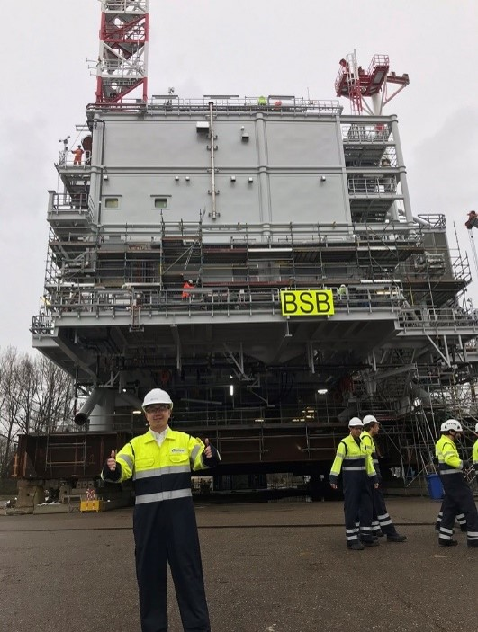
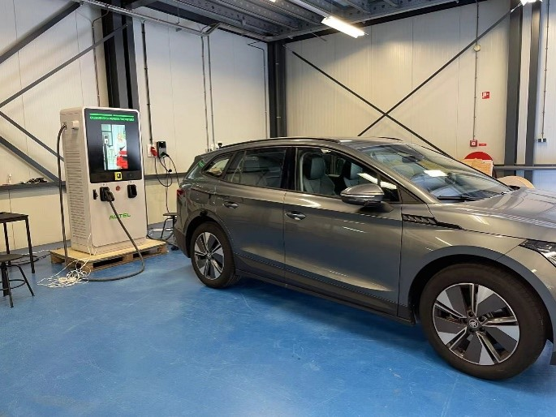
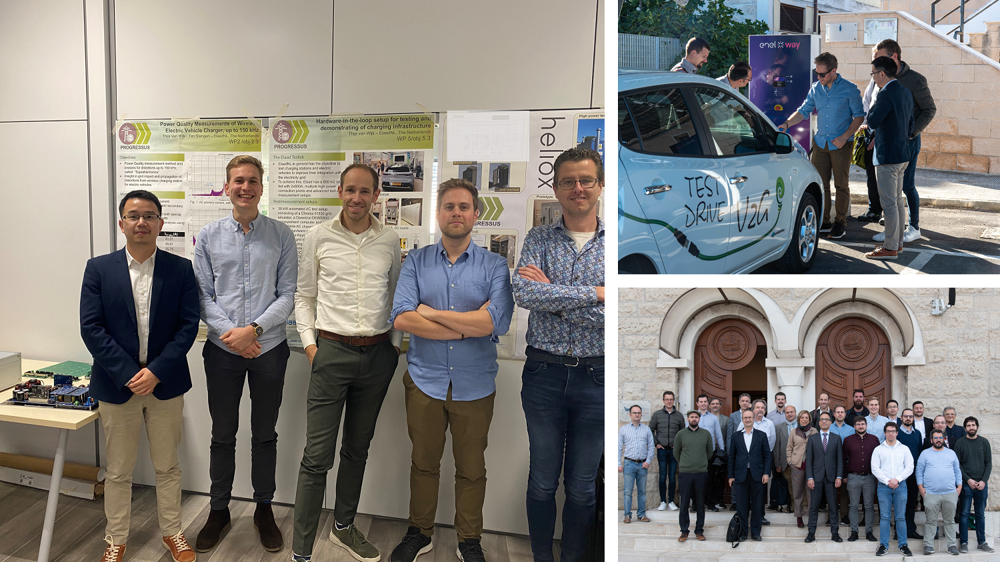
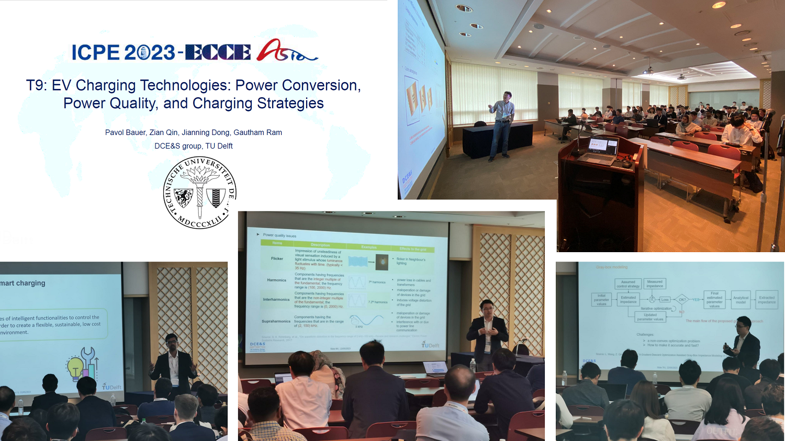
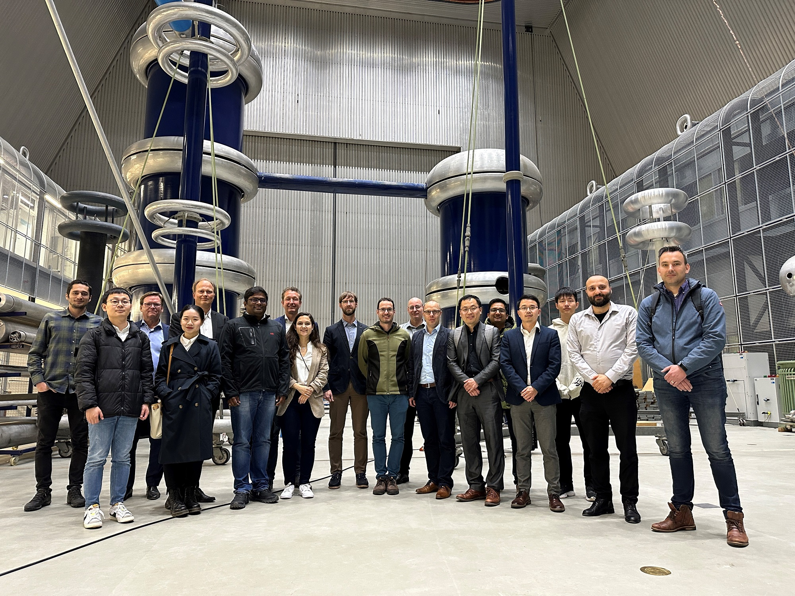
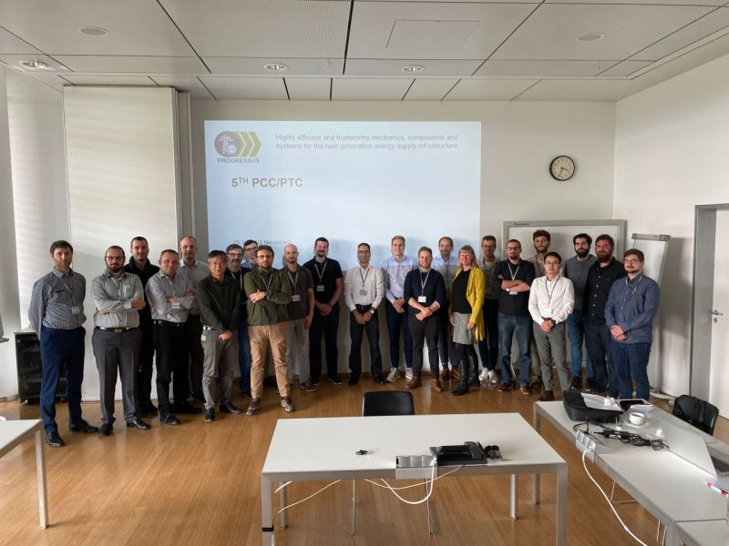
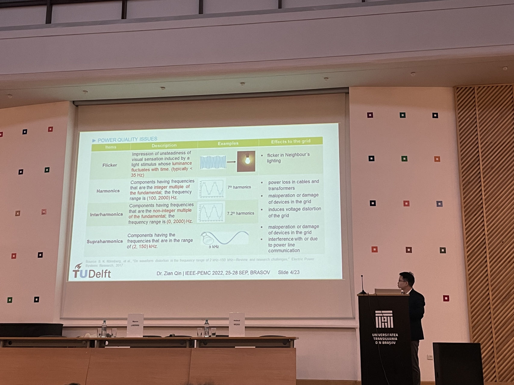
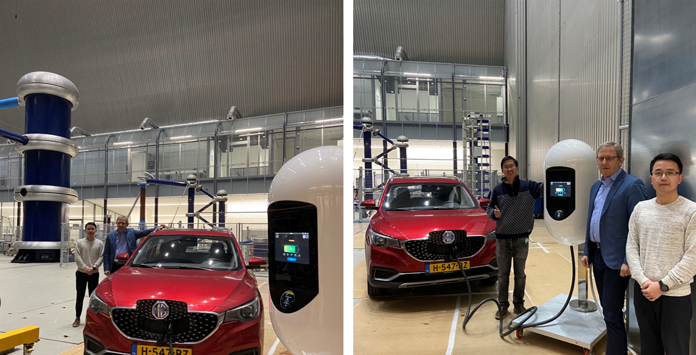
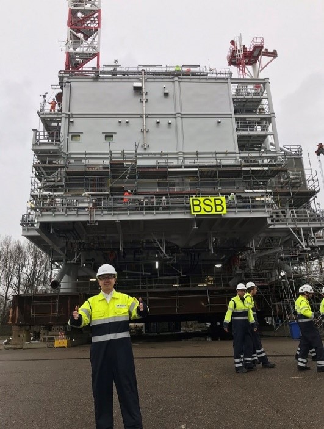
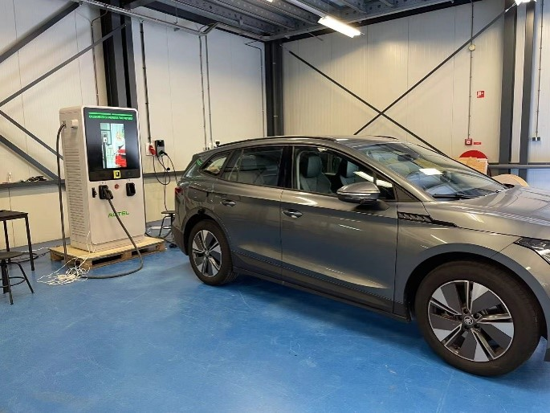